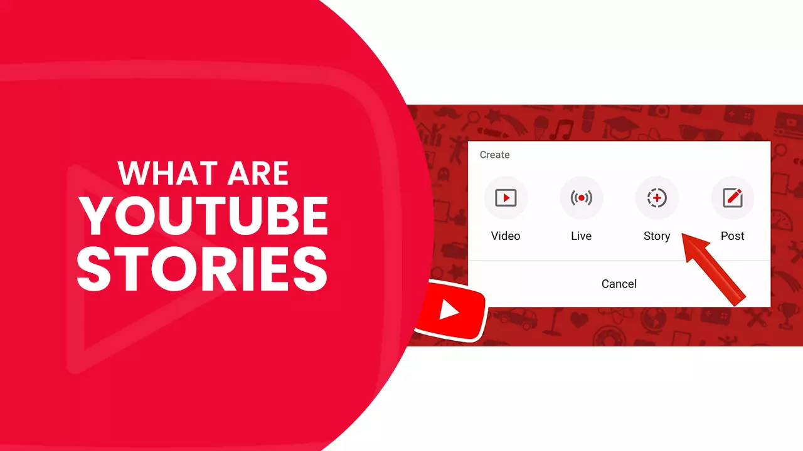
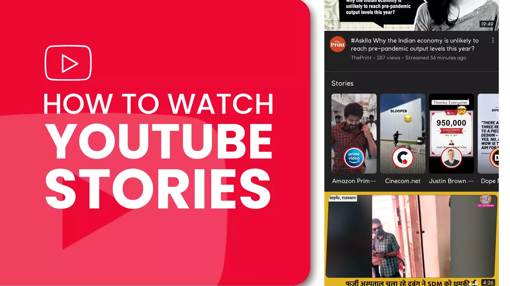
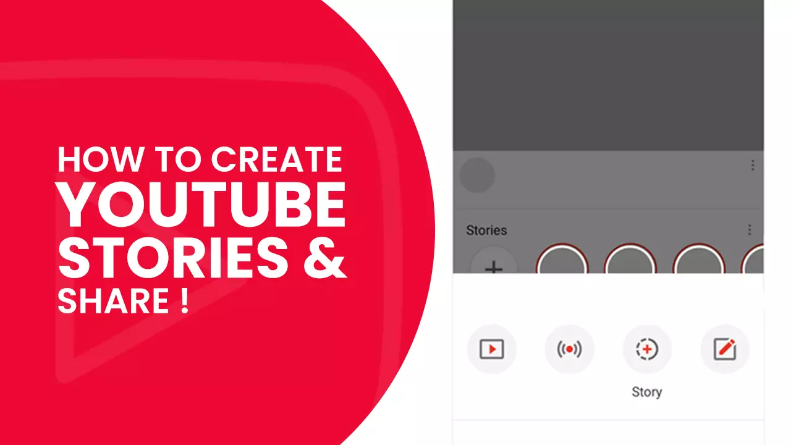
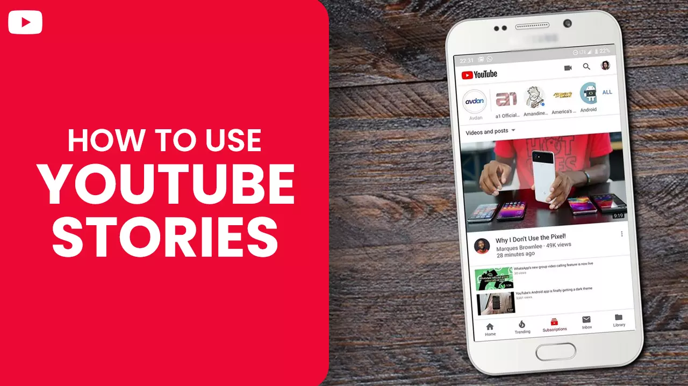
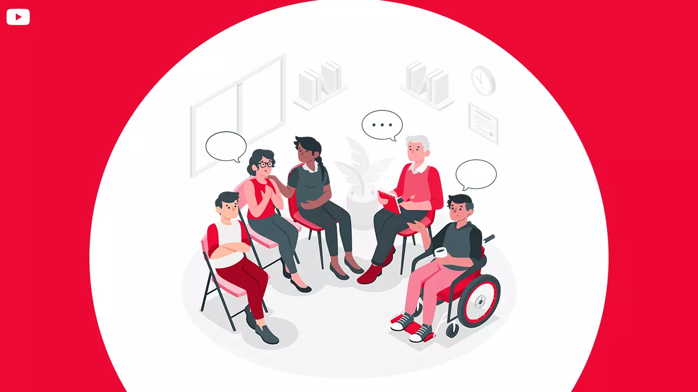
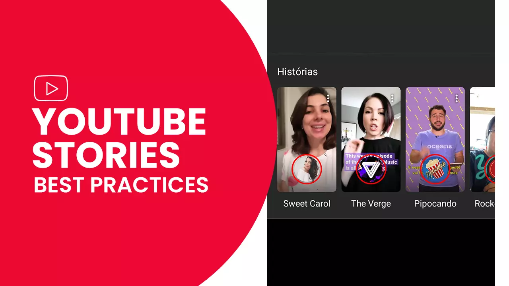
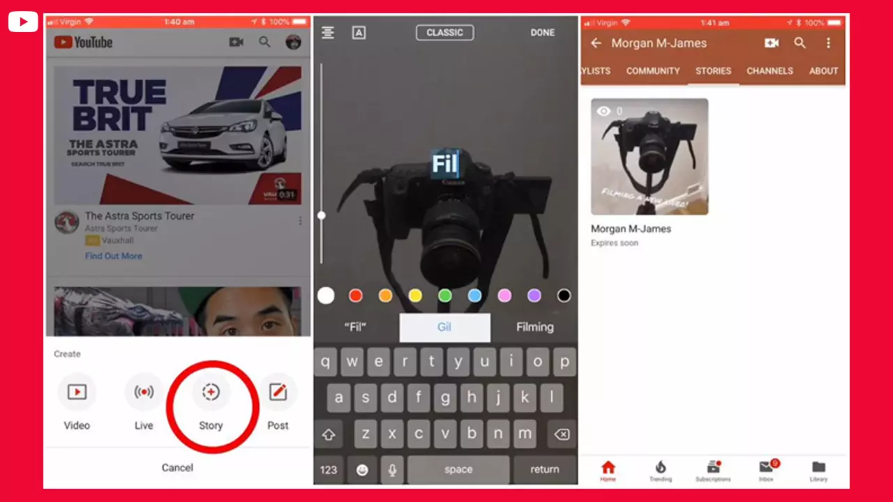

What are YouTube stories?

YouTube stories were first introduced as YouTube reels in November of 2018. This feature showcased uncanny resemblance to story features on Snapchat, Instagram, and various other social platforms.
Like Instagram, each YT story has a maximum length of 15 seconds. Unlike Instagram, YT stories can be visible for seven days - contrasting to the 24-hour visibility available for the popular image and video sharing app.
The ability to create stories is awarded to channels that have a minimum subscriber count of 10,000. Creators utilize this feature to keep in touch with their audience. Due to the bite-size nature of the content, the content is easily consumable by the viewers – users can also like/dislike and comment on the stories. Note that you have to wait at least four weeks for the feature to activate, even after you achieve the 10,000-mark threshold.
How to watch YouTube stories?

Since YouTube stories are restricted to mobile devices, you can access the feature only from the app.
-
See YouTube stories from your subscription feed
When you open the YT app on your phone, you will see a subscription icon located at the bottom of the interface - between explore and notification tabs. Once you click on the subscription icon, you get to a page where the top is occupied by a string of channel icons or profile pictures. These are stories of channels that you have already subscribed to. New stories are depicted by a colored circle around the profile picture.
You can see the story by clicking on the profile picture.
-
See YouTube stories from the channel’s stories tab
Open the YouTube app on your device and select the subscription tab at the bottom of the display. Now, press ’ALL’ on the far-right side of the story string - this will take you to a section that displays the list of channels that you have subscribed to.
Once you click the channel icon, you will arrive on the creator's channel. Left swipe on the navigation bar located at the top of the page until you find the stories tab. Click on 'Stories' to see all the active stories uploaded by the channel. A story will open once you tap on it. You also have the option to subscribe to a channel within the story.
-
Navigate to watch YouTube stories content
Like stories on Instagram, YouTube stories have line segments that show the number of stories available from the creator. By tapping on a piece, you can see the preceding photo/video in the story; you can also skip the next image or video entirely.
Just like Instagram, you can pause the story by holding your finger on the screen. To resume play, just lift your finger.
Toggle between previous and next stories from multiple channels with left and right swipes.
If a particular story piqued your interest, you can click on the comment box and leave a message. You can also interact with comments from other users by tapping the comment bubble.
Also read: YouTube Ads
How to create and share YouTube stories

YouTube stories are restricted to mobile devices and are created via the YouTube play app instead of Creator Studio.
Step 1: To access the YouTube stories tab, go to the app on your mobile device and press the camera plus icon on the top right side of the screen.
Step 2: Next, click on the 'story' icon, which is circular and has a plus sign on it.
Step 3: Now, press and hold the camera button located at the bottom of the screen to add a photo. Click the rounded arrow to toggle between your front and rear-facing cameras. If you prefer using existing media, select the camera roll icon located at the bottom left corner of your display to import available photos or videos.
Step 4: You have the option of inserting additional elements to your posts, such as text, stickers, and drawings, by selecting the correct icons on the top of the screen. You can also add music and video links.
Step 5: Once you are satisfied with your creation, press Save. To share a post to your channel, click on "Post."
Also read: How to create Youtube Shorts like a Pro
How to use YouTube stories

Now that you have a good idea of what YouTube stories are and how you can create them. Let us look at how stories can benefit your business. Creators who are not yet familiar with the feature can get valuable insights that can help them create stories that will work for them.
-
Venture into new markets
Partnering with fellow influencers is a great way to grow and reach new potential viewers and customers—consider partnering with someone that compliments and not competes with what you do.
Both you and your partner can mutually send three or more videos of 10 seconds each to one another. You can upload videos as your stories, and they will do the same for you. In this way, both the channels will grow by exposing each other to their respective audience, making stories a crucial part of your YouTube Marketing strategy.
Both administrators can add each other as comment moderators on their channels – By doing so, each creator can target comments and address them in their respective story fields.
-
Get more leads
You might not know this, but you can utilize YouTube stories to generate more leads for your business. Create a YT story addressing a problem your target audience encounters which your product or service can solve. Ask a question and coerce people to provide a reply in your comments.
Once your story gets uploaded, use the comment section to insert a link to your lead magnet and pair it with a solid call to action. Interested users that reply to your comments will be subjected to the link and most likely will click on it too. As an added advantage, you can potentially generate more leads by interacting with your audience in the comments. Thus, YouTube Stories is a major part of the brand’s video content marketing strategy.
Creators and entrepreneurs looking to up the subscription count to their webinars, newsletters, courses, etc., - can utilize this tactic.
Brands buy YouTube subscribers to get more views to their stories – more views result in more leads and higher sales.
-
Build a strong, loyal community of subscribers

New subscribers will not immediately involve themselves in any monetary transaction with a channel. Building trust takes time and effort.
YouTube stories give opportunities to creators to consistently interact with their audience regularly. You can ask viewers questions via your stories use the reply option in the story to respond to comments, pin comments or questions or provide a shout-out to your viewers - all this contributes to building a strong and loyal community.
Your people will buy what you promote if they feel emotionally connected to your channel and trust you as a creator/influencer.
-
Announce the launch of a product
You can use YouTube stories to tell your viewers about a new product that your business recently launched.
You can be creative in your story by combining your product with filters, stickers, and other story elements at your disposal - the story is also a great place to provide a link to the landing page of the launched product or a press release.
YouTube stories best practices

-
Use clips from existing content
Sometimes you don't even have to create fresh content from scratch. Select one of your longer videos and look for the part with the highest audience retention – you can find this information from your analytics. Select the most relevant 15 seconds from the selected portion (or group together multiple 15 seconds clips). Next, upload the clip (or clips) as your stories. You are also free to test your Instagram stories on YT and vice versa.
-
Create quick stories with a question
One of the best ways to capitalize on YouTube stories in order to engage with your viewers is by uploading a short snippet like "Hey guys I will be getting off work in a few hours, let me know if you have a query?". People will respond to this, even if they see it after 4-5 days. Thus, it is a great way to grow YouTube channel.
-
Answer questions from viewers via a story

The lower end of the screen will show questions asked by your audience, pick a question of your choice and respond to it by pressing record. Your content will be visible to your viewers for the upcoming six days.
-
Utilize the segment feature
YouTube allows creators to shoot the segments of the story without direct upload. Once you finish shooting your clips, you can upload them all together in sequence. For example, suppose you launched a new product and want to demonstrate different stages of product usage to your viewers - you can record each step and later upload them together in a sequence.
-
Use a decent microphone
Surprisingly, the video streaming platform places less emphasis on quality when it comes to YouTube story features – it could be because of the short duration of videos uploaded as stories. But if the majority of your recording happens outdoors, then we suggest using a decent external microphone. As for indoor shoots, the phone microphone will do the job just fine. Having the right equipment for channel is crucial.
Hold up, before you go, why not check out our other blogs! We have a plethora of quality content at your disposal which we are sure to bring you value!
We hope your time invested on our article was well spent.
Feel free to share.